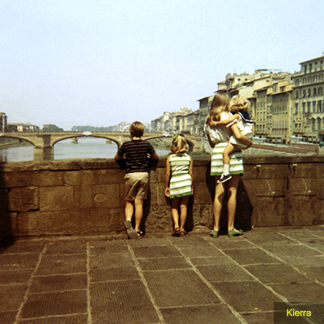

Photo Corrections
Lesson 2
In this lesson I learned how to correct a photo. I learned the importance of making sure a photo is proportional if I am going to resize a photo in the future. I was able to straighten and crop an image, and adjust the tone of the image. I was able to use the Spot Healing tool to repair parts of the photo. I used the Patch tool to remove objects. I used the Clone Stamp to touch up parts of the image as well.I also applied the Smart Sharpen filter to finish with the photo.
